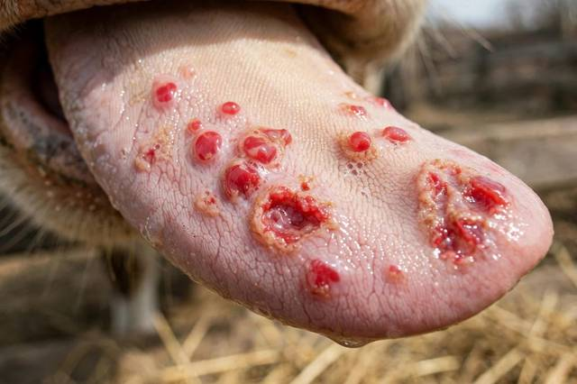

Foot-and-Mouth Disease (FMD) in Cattle and Buffalo
Global Livestock Health & Veterinary Learning
Cattle & Buffalo Health
Veterinary Education
Foot-and-mouth disease (FMD) is a highly contagious viral disease of cloven-hoofed animals, including cattle, buffalo, sheep, goats and pigs. Outbreaks can spread rapidly and cause major production and trade losses. FMD is not the same as hand, foot and mouth disease in people.
On this page: clinical signs, causes and transmission, diagnosis, treatment principles and prevention.
Clinical Signs
1
Fever(High body temperature)
2
Loss of Appetite(Refusal to eat)
3
Salivation(Excessive drooling)
4
Blisters in Mouth(Blisters and erosions in the mouth)
5
Blisters on Tongue(Blisters and erosions on the tongue)
6
Blisters on Feet(Lesions around the feet or coronary band)
7
Lameness(Difficulty in walking)
8
Milk Drop(Sudden fall in milk production)
9
Severe Illness in Young Animals(Severe illness or sudden death in young animals)
FeverLoss of AppetiteSalivationBlisters in Mouth

Blisters on TongueBlisters on FeetLamenessMilk DropSevere Illness in Young Animals
Causes and Transmission
FMD is caused by foot-and-mouth disease virus. It spreads through direct contact with infected animals, contaminated equipment, vehicles, clothing, feed, water and animal products, as well as virus-containing droplets and aerosols under suitable conditions. Movement of animals and people can carry infection between farms.
Veterinary Diagnosis
Clinical signs can raise suspicion, but laboratory confirmation is important because other diseases can cause mouth lesions and lameness. Contact the local veterinary authority promptly when FMD is suspected and follow official reporting and movement-control instructions.
Treatment and Case Management
There is no specific antiviral cure for FMD. Veterinary care is supportive and focuses on hydration, soft palatable feed, pain and fever management where appropriate, and treatment of secondary complications under veterinary direction. Do not use antibiotics as a treatment for the virus; they are only considered for diagnosed or strongly suspected secondary bacterial complications.
Important: FMD suspicion should be treated as an urgent reportable-disease concern. Avoid moving animals, milk, equipment or visitors between farms until veterinary authorities advise what is safe.
Recommended Medicines
1
Topical – Glycerin(For mouth lesions)Apply on mouth lesions
2
Topical – Antiseptic spray(For mouth and foot lesions)Spray on lesions
3
Antibiotic – Penicillin(For bacterial infection)10–20 lac IU IM
4
Antibiotic – Oxytetracycline(Broad spectrum antibiotic)10–20 mg/kg IM or SC
5
NSAID – Ketoprofen(Pain and fever control)3 ml per 100 kg IM
6
NSAID – Diclofenac sodium(Pain and anti-inflammatory)3 ml per 100 kg IM
7
NSAID – Meloxicam(Pain and fever control)3 ml per 100 kg IM
8
Supportive care – Multivitamins(For better recovery)10 ml IM daily
⚠ Important Tips:
Use antibiotics only under veterinary advice.
Control fever and pain with NSAIDs.
Keep the animal hydrated and give soft feed.
Report suspected FMD to the veterinary authority at once — do not move animals between farms.
Use only ONE NSAID at a time — never combine ketoprofen, diclofenac and meloxicam.
Vaccination — follow the vet’s scheduleInjection — vet-administered onlyMedicines — only as prescribed by a veterinarian
Prevention and Farm Management
Report suspected cases promptly to the competent veterinary authority
Stop animal movement on and off the affected premises until advised
Separate sick animals and use dedicated equipment and clothing
Clean and disinfect premises, footwear, vehicles and equipment using an appropriate approved product
Use vaccination programmes matched to circulating serotypes and official local guidance
Buy animals from trusted sources and observe quarantine and health checks
Key Takeaway
Rapid reporting, movement control, biosecurity and appropriately matched vaccination are essential to FMD control.
Keep herd health records, consult a qualified veterinarian and follow the animal-health authority's current guidance for your region.
Frequently Asked Questions
What are the symptoms of foot-and-mouth disease in cattle?
Fever followed by blisters or erosions in the mouth, on the tongue or dental pad, with excessive salivation and difficulty eating. Lesions around the feet cause lameness, and milk production can fall suddenly.
How does FMD spread between cattle?
FMD virus spreads through direct contact with infected animals, contaminated equipment, vehicles, clothing, feed, water and animal products, and through virus-containing droplets and aerosols. Movement of animals and people can carry infection between farms.
Is foot-and-mouth disease a risk to people?
No. FMD affects cloven-hoofed animals such as cattle, buffalo, sheep, goats and pigs. It is not the same as hand, foot and mouth disease in people.
How is FMD in cattle treated?
There is no specific antiviral cure for FMD. Veterinary care is supportive: hydration, soft palatable feed, pain and fever management where appropriate, and treatment of secondary complications under veterinary direction. Do not use antibiotics as a treatment for the virus.
How can foot-and-mouth disease be prevented?
Report suspected cases promptly, stop animal movement, separate sick animals, and clean and disinfect premises, footwear, vehicles and equipment. Use vaccination programmes matched to circulating serotypes and official local guidance. Always consult a veterinarian.
What is FMD vaccine for cattle?
FMD vaccination programmes must be matched to the circulating serotypes and official local guidance. Vaccination is one part of control, together with rapid reporting, movement control and biosecurity, so follow your veterinary authority's schedule.
How to treat mouth sores in cattle?
Mouth sores with fever, drooling and lameness may be foot-and-mouth disease, so report suspected cases promptly and do not move animals. Veterinary care is supportive, with hydration, soft palatable feed and treatment of secondary complications under veterinary direction.
گائے میں منہ کھر (FMD) کی علامات کیا ہیں؟
بخار، منہ میں چھالے، زیادہ رال بہنا، کھانے میں مشکل اور پاؤں کے زخم سے لنگڑاپن منہ کھر کی علامات ہیں۔ دودھ اچانک کم ہو جاتا ہے۔ مشتبہ کیس کی فوراً ویٹرنری حکام کو اطلاع دیں اور جانوروں کی نقل و حرکت روک دیں۔